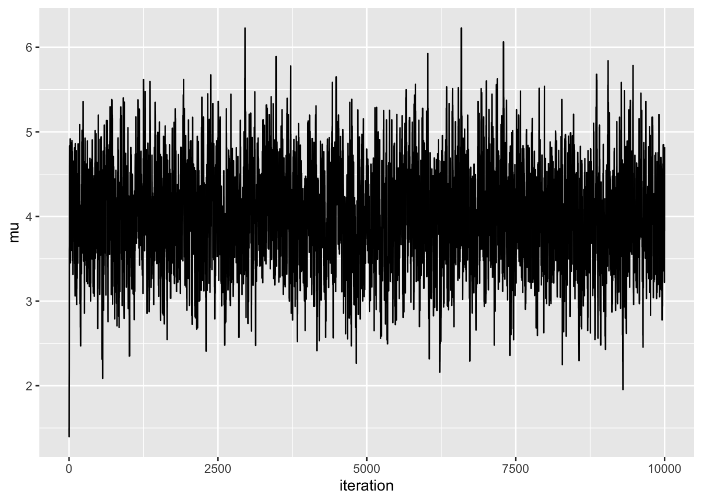
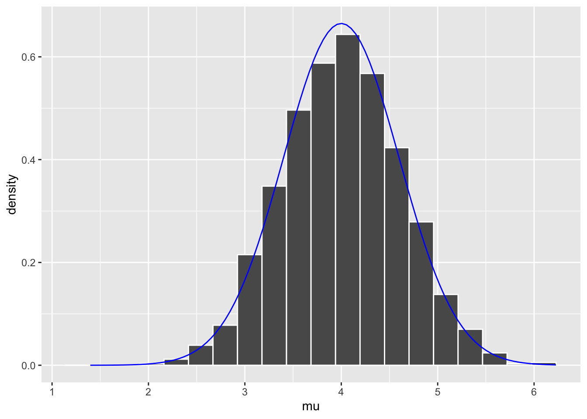
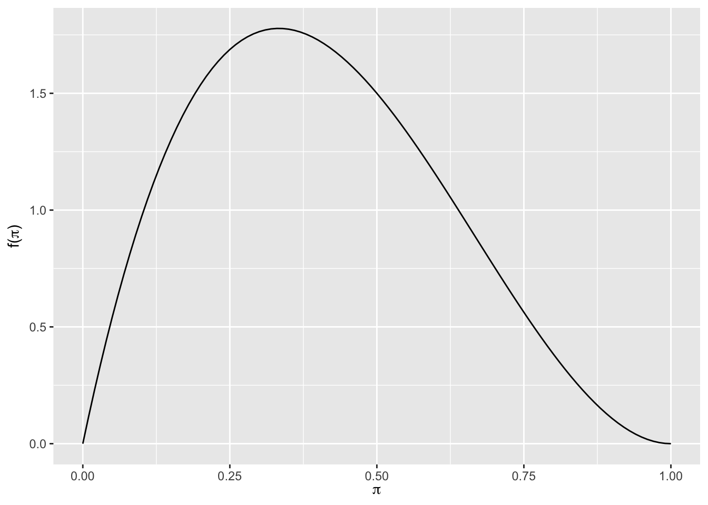
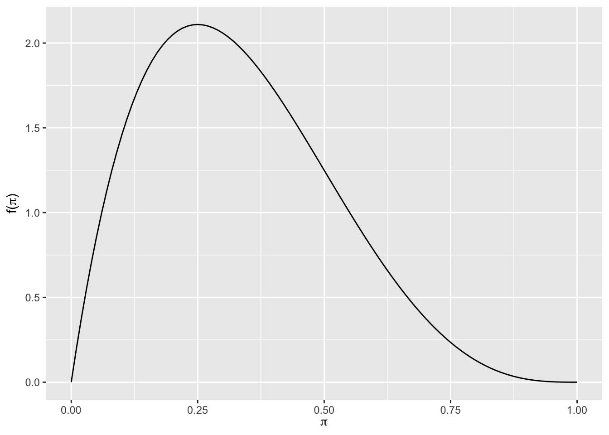
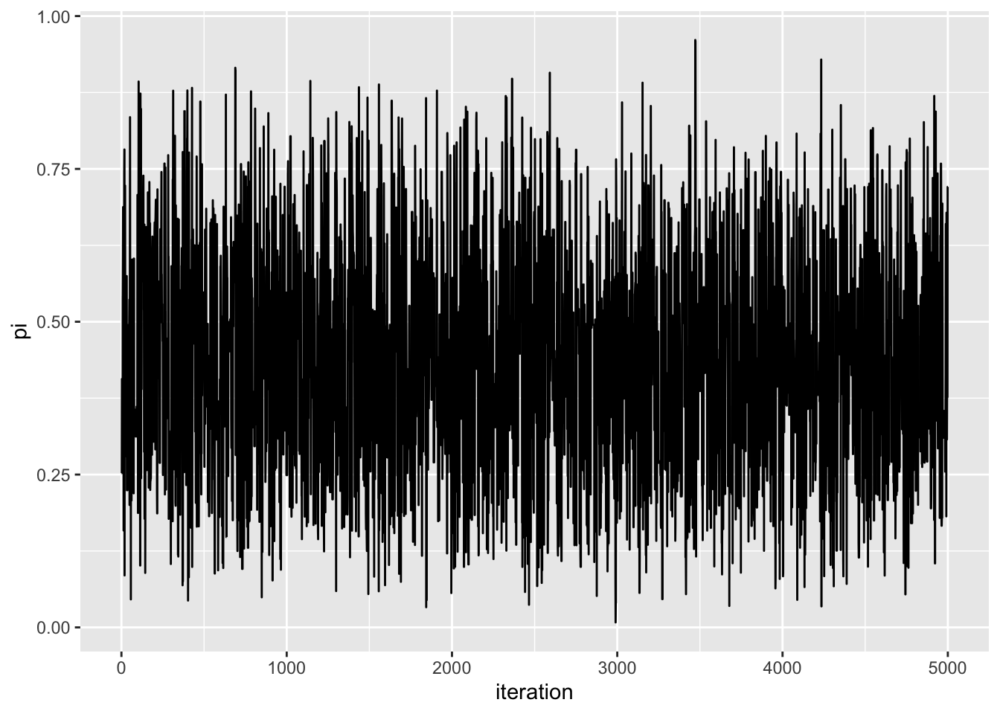
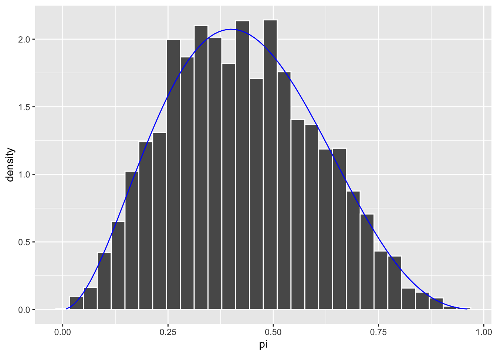

library(tidyverse)
library(stats2data)
library(rstan)
library(janitor)
library(bayesplot)
library(bayesrules)
library(beepr)In addition to usual packages, tidyverse (Wickham et al. (2019)), stats2data (Sadigov (2022)), janitor (Firke (2021)), bayesrules (Dogucu, Johnson, and Ott (2021)) and bayesplot (Gabry and Mahr (2022)), we also use rstan (n.d.) in this chapter.
Libraries
Chapter 7
Assume the following Normal-Normal model:
\[ Y|\mu \sim Normal(\mu, 0.75^2) \]
\[ \mu \sim Normal(0, 1^2) \]
We observe data:
\[ Y = 6.25 \]
Then our posterior is:
\[ \mu| Y = 6.25 \sim Normal(4, 0.6^2) \]
Metropolis algorithm (transition probabilities)
current <- 3
set.seed(8)
proposal <- runif(1, min = current - 1, max = current + 1)
proposal[1] 2.93259# prior * likelihood (num)
proposal_plaus <- dnorm(proposal, 0, 1) * dnorm(6.25, proposal, 0.75)
proposal_plaus[1] 1.624909e-07# prior * likelihood (denum)
current_plaus <- dnorm(current, 0, 1) * dnorm(6.25, current, 0.75)
current_plaus[1] 1.971928e-07proposal_plaus / current_plaus[1] 0.8240205alpha <- min(1, proposal_plaus / current_plaus)
alpha[1] 0.8240205next_stop <- sample(c(proposal, current),size = 1, prob = c(alpha, 1-alpha))
next_stop[1] 2.93259Automate transitions
one_mh_iteration <- function(w, current){
# STEP 1: Propose the next chain location
proposal <- runif(1, min = current - w, max = current + w)
# STEP 2: Decide whether or not to go there
proposal_plaus <- dnorm(proposal, 0, 1) * dnorm(6.25, proposal, 0.75)
current_plaus <- dnorm(current, 0, 1) * dnorm(6.25, current, 0.75)
alpha <- min(1, proposal_plaus / current_plaus)
next_stop <- sample(c(proposal, current), size = 1, prob = c(alpha, 1-alpha))
# Return the results
return(data.frame(proposal, alpha, next_stop))
}set.seed(8)
one_mh_iteration(w = 1, current = 3) proposal alpha next_stop
1 2.93259 0.8240205 2.93259set.seed(83)
one_mh_iteration(w = 1, current = 3) proposal alpha next_stop
1 2.017587 0.01708783 3set.seed(7)
one_mh_iteration(w = 1, current = 3) proposal alpha next_stop
1 3.977819 1 3.9778197.3
Now, lets move not just single time, but many times.
# N:= number of time steps
# w: = half width of Uniform Proposal Model
# mh: = Metropolis-Hastings
mh_tour <- function(N, w){
# 1. Start the chain at location 3
current <- 1
# 2. Initialize the simulation (store 0's and update later)
mu <- rep(0, N)
# 3. Simulate N Markov chain stops
for(i in 1:N){
# Simulate one iteration
sim <- one_mh_iteration(w = w, current = current)
# Record next location
mu[i] <- sim$next_stop
# Reset the current location
current <- sim$next_stop
}
# 4. Return the chain locations
return(tibble::tibble(iteration = c(1:N), mu))
}Example
# experiment with N and w
set.seed(84735)
mh_simulation_1 <- mh_tour(N = 100000, w = 0.01)
mh_simulation_1# A tibble: 100,000 × 2
iteration mu
<int> <dbl>
1 1 1.00
2 2 1.00
3 3 1.01
4 4 1.01
5 5 1.02
6 6 1.03
7 7 1.03
8 8 1.04
9 9 1.04
10 10 1.04
# … with 99,990 more rowsbeep(sound = 2)Plot
mh_simulation_1 %>%
ggplot(aes(x = iteration, y = mu)) +
geom_line()
mh_simulation_1 %>%
ggplot(aes(x = mu)) +
geom_histogram(aes(y = ..density..), color = "white", bins = 20) +
stat_function(fun = dnorm, args = list(4,0.6), color = "blue")
7.5: Beta/Binomial + Beta proposal model
- Independence sampling algorithm (i.e. proposal point does not depend on the previous point, but probabilities does, so it is still MC).
- Assume Beta(2,3) prior for pi.
plot_beta(2,3)
Likelihood: Binomial(n = 2, pi).
Data: Y = 1 out of 2 trials.
Posterior: Beta(2 + 1, 3 + 1) = Beta(2,4)
plot_beta(2, 4)
Lets do MCMC from scretch using Metropolis-Hastings.
Single iteration.
one_iteration <- function(a, b, current){
# STEP 1: Propose the next chain location
proposal <- rbeta(1, a, b)
# STEP 2: Decide whether or not to go there
proposal_plaus <- dbeta(proposal, 2, 3) * dbinom(1, 2, proposal)
proposal_q <- dbeta(proposal, a, b)
current_plaus <- dbeta(current, 2, 3) * dbinom(1, 2, current)
current_q <- dbeta(current, a, b)
alpha <- min(1, proposal_plaus / current_plaus * current_q / proposal_q)
next_stop <- sample(c(proposal, current), size = 1, prob = c(alpha, 1-alpha))
return(tibble(proposal, alpha, next_stop))
}Many iterations.
betabin_tour <- function(N, a, b){
# 1. Start the chain at location 0.5
current <- 0.5
# 2. Initialize the simulation
pi <- rep(0, N)
# 3. Simulate N Markov chain stops
for(i in 1:N){
# Simulate one iteration
sim <- one_iteration(a = a, b = b, current = current)
# Record next location
pi[i] <- sim$next_stop
# Reset the current location
current <- sim$next_stop
}
# 4. Return the chain locations
return(tibble(iteration = c(1:N), pi))
}Example
set.seed(84735)
betabin_sim <- betabin_tour(N = 5000, a = 1, b = 1)
beep()
# Plot the results
betabin_sim %>%
ggplot(aes(x = iteration, y = pi)) +
geom_line()
betabin_sim %>%
ggplot(aes(x = pi)) +
geom_histogram(aes(y = ..density..), color = "white") +
stat_function(fun = dbeta, args = list(3, 4), color = "blue")
References
Dogucu, Mine, Alicia Johnson, and Miles Ott. 2021. “Bayesrules: Datasets and Supplemental Functions from Bayes Rules! Book.” https://github.com/bayes-rules/bayesrules.
Firke, Sam. 2021. “Janitor: Simple Tools for Examining and Cleaning Dirty Data.” https://CRAN.R-project.org/package=janitor.
Gabry, Jonah, and Tristan Mahr. 2022. “Bayesplot: Plotting for Bayesian Models.” https://mc-stan.org/bayesplot/.
Sadigov, Tural. 2022. “Stats2data: Data Package for MATH 254, Statistical Modeling and Applications, at Hamilton College.” https://github.com/turalsadigov/stats2data.
Stan Development Team. n.d. “RStan: The r Interface to Stan.” https://mc-stan.org/.
Wickham, Hadley, Mara Averick, Jennifer Bryan, Winston Chang, Lucy D’Agostino McGowan, Romain François, Garrett Grolemund, et al. 2019. “Welcome to the Tidyverse” 4: 1686. https://doi.org/10.21105/joss.01686.